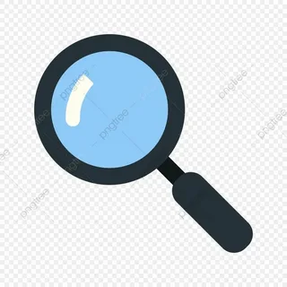

How to Use Search
Search on Ranking Hours is designed to help you reach a relevant comparison without browsing the entire site. Enter a product, brand, category, or model name and review the matching results. The filters can narrow the list when you already know the type of product you want to explore.
Search results are a starting point, not a substitute for reading the full comparison. A result may match a brand or product name while the article itself covers a wider set of details. Open the relevant page and check the model, generation, storage, capacity, regional version, and other specifications before drawing a conclusion.
Product information can change over time. Prices, availability, software features, included accessories, and retailer listings may be different when you visit a page. The comparison articles focus on information that helps readers understand the differences, while current purchasing details should be confirmed with the seller or manufacturer.
If a search does not return what you expect, try a shorter product name or a broader category. You can also browse the category pages to discover comparisons that use different wording. When you find an error or an outdated result, the Corrections page explains how to report it.